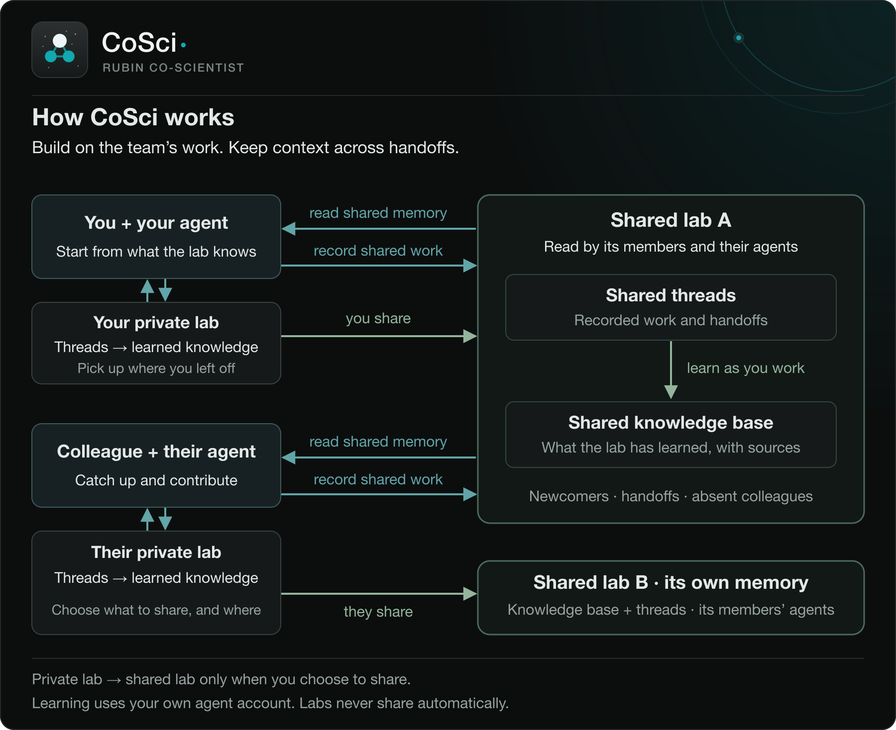

CoSci, the Rubin Co-Scientist
CoSci is the Rubin Co-Scientist: a human-centred assistant that works inside a research team, keeping context alive as people come and go. It records conversations and learns statements from them, each linked to where it was said, so each person's agent can build on what the team already knows.
Work happens in labs. Your private lab is yours alone. A shared lab is a private GitHub repository its members share. A thread is a named conversation in a lab, and the lab's knowledge base holds what CoSci learned from its threads, each statement linked to its source. Agents are optional: you can use CoSci with Claude Code, Codex, or no agent at all.
Installing needs a GitHub account with access to the download page; ask the person who invited you. These docs are public.

Guides
Reference
- Architecture
- User Commands - Quick Reference
- Configuration
- The harness
- Improving the harness from the record
- cosci mutable-surface manifest
- Python API
- Slash commands and typed commands
- cosci triage
- Walkthrough: two people, one project
CoSci, the Rubin Co-Scientist, from the Center for Decoding the Universe at Stanford. These pages match the release of October 23, 2026 (2026.10.23.203419), the same guides that come with CoSci.